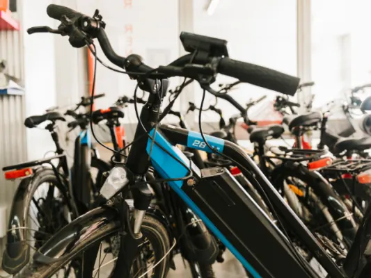

Gids
Parkeren en bereikbaarheid in Nijmegen
Nijmegen heeft een compact centrum op een heuvel, met vier parkeergarages eronder en P+R-terreinen aan de rand van de stad. Wie met de trein komt, stapt uit op een kwartier lopen van de Grote Markt. In deze gids staan alle pagina's over parkeren en bereikbaarheid bij elkaar: de garages met hun tarieven, de goedkope en gratis alternatieven, het station, de bus en hoe je je door de stad beweegt.
Parkeren in het centrum
In de garages Keizer Karel, Kelfkensbos, Mariënburg en Eiermarkt betaal je € 3,90 per uur overdag en € 0,50 per uur 's nachts. Op straat is het centrum duurder. Gratis parkeer je op P+R Nijmegen West; P+R Nijmegen Noord kost € 3,50 per dag inclusief de bus.

Parkeren in Nijmegen
Parkeren in Nijmegen: alle parkeergarages in het centrum, tarieven op straat, de P+R en waar je gratis of goedkoop parkeert. Bijgewerkt voor 2026.
Parkeergarage Kelfkensbos
Parkeergarage Kelfkensbos bij Museum Het Valkhof: ingang Voerweg 2, 600 plaatsen. Openingstijden, tarief (€ 3,90 per uur, 's avonds € 0,50) en tips.
Parkeergarage Mariënburg
Parkeergarage Mariënburg ligt midden in het centrum, bij LUX. Adres Arsenaalgas 8, openingstijden, tarief (€ 3,90 per uur, 's avonds € 0,50) en hoogte…
Parkeergarage Eiermarkt
Parkeergarage Eiermarkt ligt naast de Stevenskerk, vlak bij de Grote Markt. Adres, openingstijden, tarief (€ 3,90 per uur, 's avonds € 0,50) en hoogte.

Parkeergarage Keizer Karel
Parkeergarage Keizer Karel ligt naast Nijmegen Centraal Station: 684 plaatsen, open vanaf 5.00 uur, maximaal € 16,- per dag. Adres, tijden en tarieven.
Met trein, bus en fiets
Station Nijmegen heeft directe intercity's naar onder meer Utrecht, Amsterdam en Den Haag; het busstation ligt ernaast. Op de fiets is de stad vlak, behalve de heuvel naar het centrum, en een e-bike helpt op de stuwwal richting Berg en Dal.
Station Nijmegen
Alles over station Nijmegen: welke treinen er stoppen, de verbouwing tot 2028 met nieuw perron en westentree, fietsenstallingen, parkeren en de weg…
Plan je bezoek aan Nijmegen
Een dagje of weekend Nijmegen? Hoe je er komt met trein, bus of auto, waar je parkeert, openingstijden, overnachten, toeristische informatie en…

Zo vind je een e-bike die bij jou past
Woon-werkverkeer, toertochten of boodschappen? Zo kies je een e-bike met de juiste motor, accu en framemaat, en waar je op let bij het proefrijden.

Nijmegen op de scooter: de leukste routes en handige weetjes
De stad en omgeving verkennen op de scooter? De leukste routes rond Nijmegen en handige weetjes over parkeren en regels.
Onderweg in de stad
Deelauto's, deelscooters en de pont over de Waal: zo kom je rond zonder eigen auto. En over de Waalbrug rijden dagelijks tienduizenden voertuigen de stad in en uit.

Mobiliteit in Nijmegen: hoe flexibele oplossingen het dagelijks leven vergemakkelijken
Deelfietsen, deelauto's en slim OV: zo maken flexibele vervoersoplossingen het leven in groeiend Nijmegen makkelijker.

Over het water Nijmegen verkennen? Zo doe je dat!
Nijmegen vanaf het water ontdekken? Zo kun je de Waal op, met een sloep of bootje huren, voor een dagje uit met het gezin of een bedrijfsuitje.

De Waalbrug in Nijmegen
Alles over de Waalbrug in Nijmegen: de bouw in 1936, het opblazen in 1940, de verovering in september 1944, de renovatie en hoe je over de brug naar…
Andere gidsen: zien en doen
Veelgestelde vragen
Wat kost parkeren in het centrum van Nijmegen?
In de parkeergarages € 3,90 per uur van 8.00 tot 18.00 uur en € 0,50 per uur 's nachts. Op straat € 4,00 per uur. In Eiermarkt, Mariënburg en Keizer Karel betaal je maximaal € 16,- per 24 uur.
Waar kun je gratis parkeren in Nijmegen?
Op P+R Nijmegen West, en de eerste twee uur in de garage van winkelcentrum Dukenburg. P+R Nijmegen Noord kost € 3,50 per dag inclusief de bus naar het centrum.
Welke parkeergarages zijn er in het centrum van Nijmegen?
Keizer Karel, Kelfkensbos, Mariënburg en Eiermarkt. Kelfkensbos ligt het dichtst bij de Waalkade en het Valkhof, Mariënburg midden in het winkelgebied.
Hoe kom je van station Nijmegen naar het centrum?
Lopend, in ongeveer een kwartier naar de Grote Markt. Het busstation ligt direct naast het station.